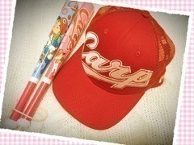

| 2016/09 11 Sun | ひめたん-0o0-その667 |

カープ優勝おめでとうございます！！！
結局詳しくはなれなかったけれど
広島県民としてやはり嬉しい！！！
カープ女子が流行ったりして
それこそ私が上京してから
日本中でブームが起こったりしましたが
まだ広島に住んでた頃からずっと
地元愛、郷土愛みたいなものは根強くあって
カープ帽を被った小学生の男子たちを
いつも街中で見かけたなあ。
広島に住む野球少年たちの
憧れの存在、それは今も
きっと変わらないんだと思います( ˇωˇ )
絶賛 広島の街は
大盛り上がりだと聞いています
きっと真っ赤なんでしょう！
感動をありがとう！！

日曜の夜は、らじらー！サンデー
次回のゲストは
声優アーツに中村繪里子さん、
乃木坂から衛藤美彩ちゃんの登場です。
募集中のメールテーマは
◯みさ先輩への応援メッセージ
◯オリラジ・ひめたんが十五夜に
狼男、狼女になって叫んだこととは？
◯おねだり男子！
◯セクシーに言いやがれっリターンズ
おたよりの宛先はこちら
この日は名古屋で全握ですね( ˆωˆ )～♪
ろってぃー！！
ギタヒロお疲れ様でした！！
スタジオ行けなくてごめんね( >_< )
また乃木團のみんなで演奏したいな～＊
～お知らせ～
TV
9/17 H♪LINE
雑誌
9/30 BUBKA 11月号
10/31 BUBKA 12月号
ラジオ
9/18 乃木坂46の「の」
9/21 RadiPrism
イベント
9/23 東京国際ブックフェアトークショー
リリース
9/30 NOGIBINGO!6 BD&DVD
11/9 16thシングル
広島ホームテレビさんの「H♪LINE」は
カープ優勝特番の関係で
1週間オンエアがズレました＼(^o^)／
中田歴史塾！！
正座して観てました！！
(＊´・ω・＊)
コメント(683)
2016/09/11 23:42